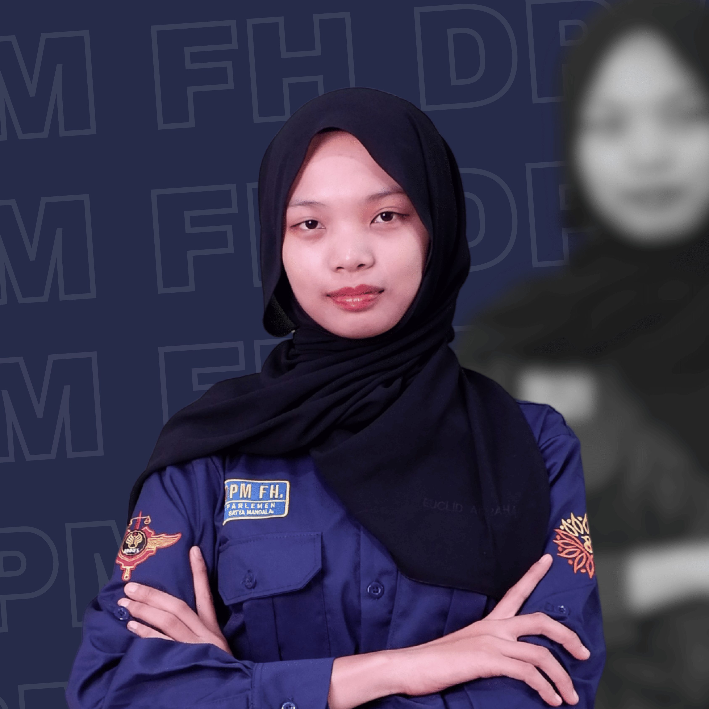
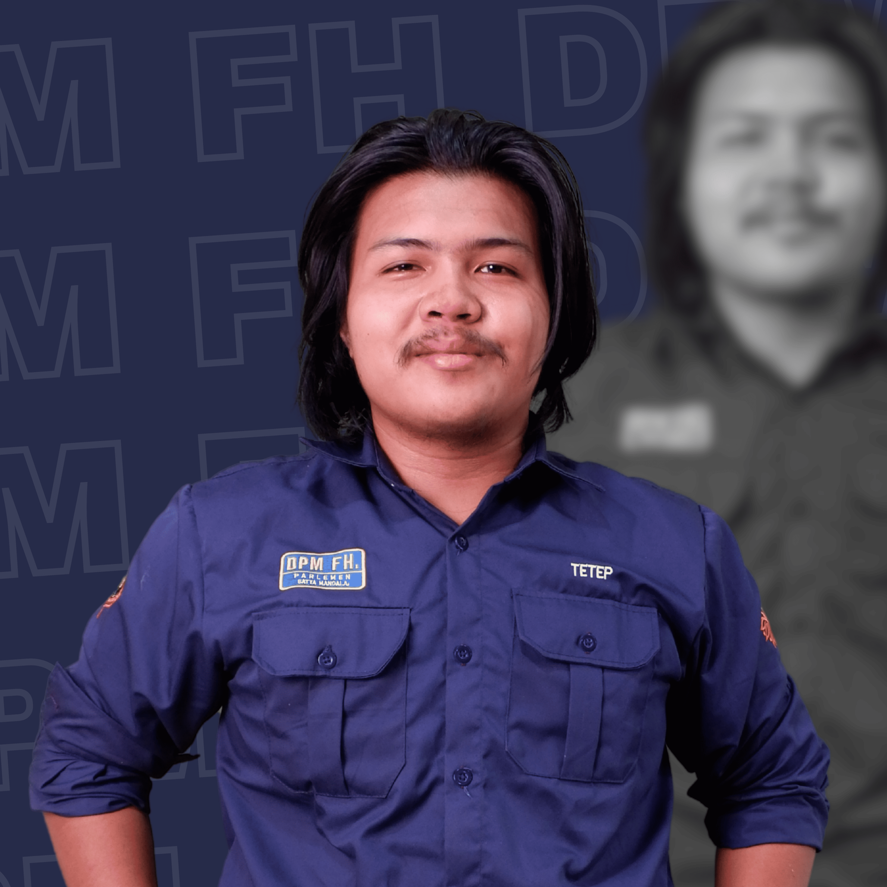
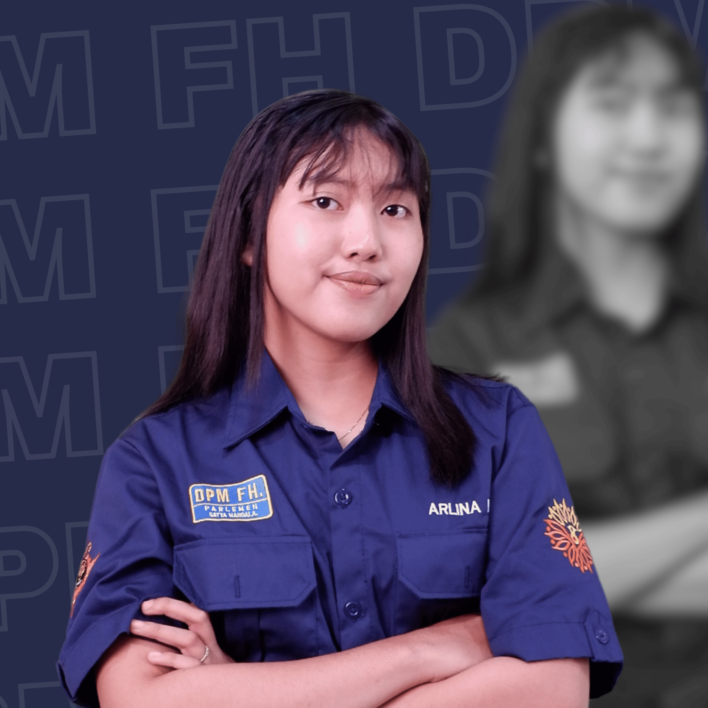
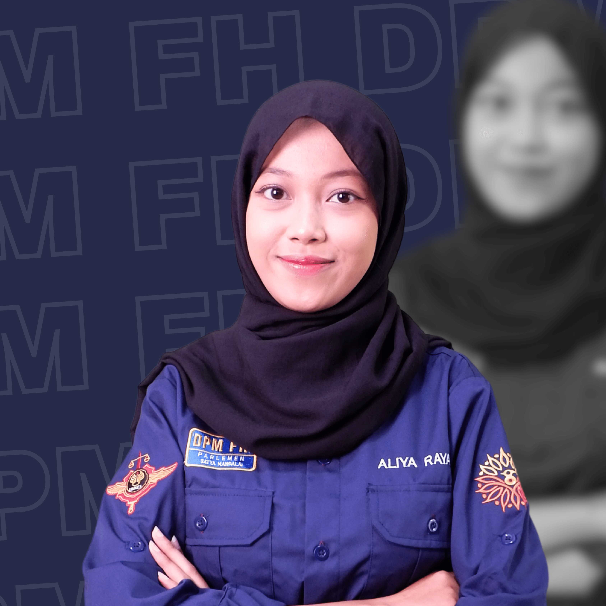
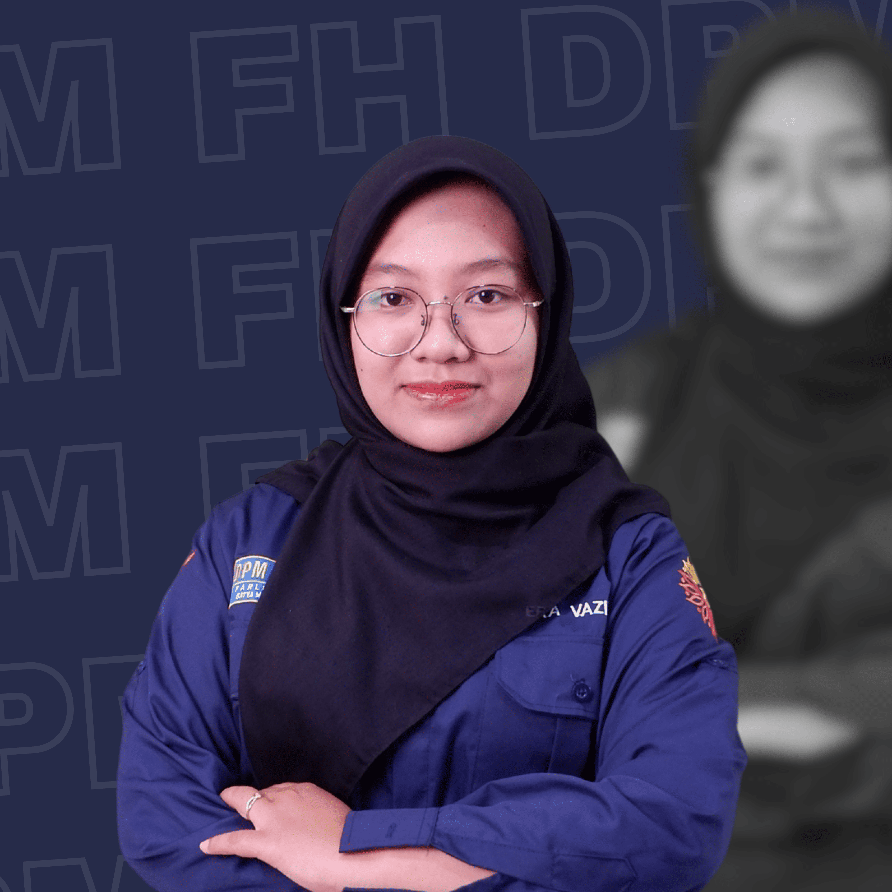
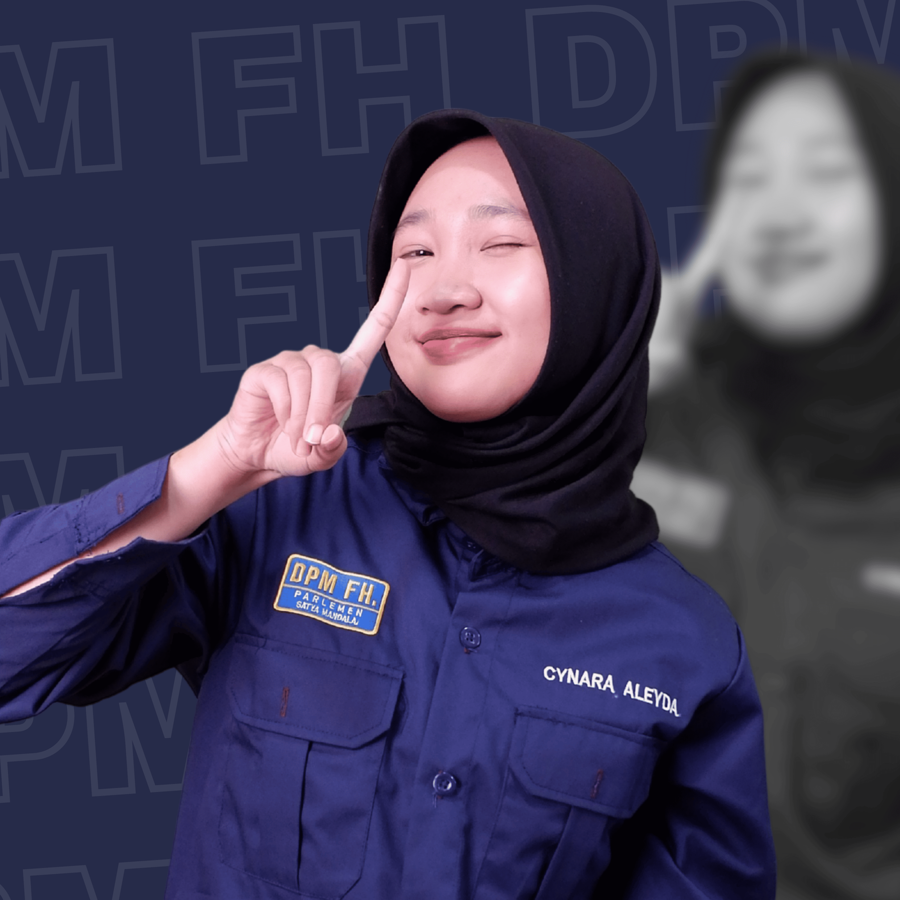
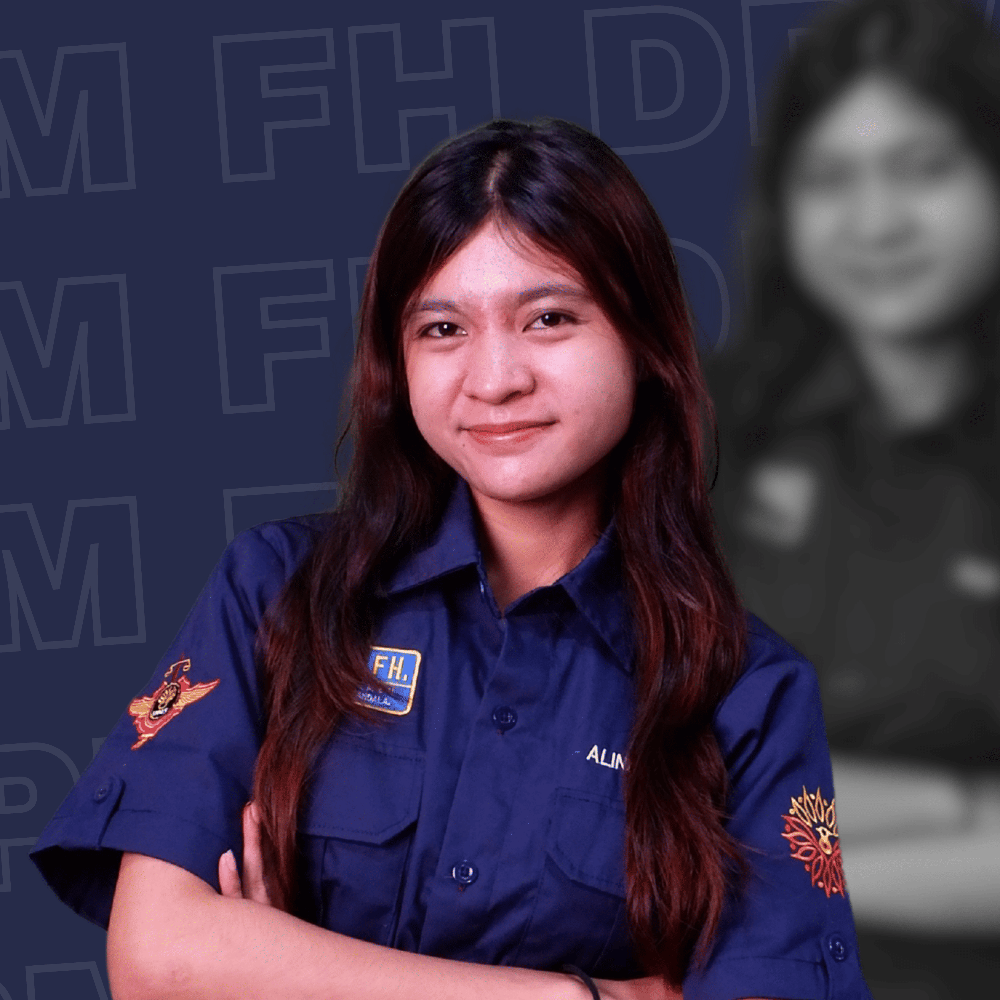

←
Kembali ke Beranda
Dewan Perwakilan Mahasiswa Fakultas Hukum UNNES
Komisi 1 - Legislasi
Struktur keanggotaan Komisi Legislasi DPM FH UNNES.
Dewan Perwakilan Mahasiswa Fakultas Hukum UNNES
Struktur keanggotaan Komisi Legislasi DPM FH UNNES.
Komisi 1 memiliki tugas utama dalam pembuatan, pengkajian, serta pengesahan peraturan yang berkaitan dengan kehidupan kemahasiswaan di Fakultas Hukum UNNES. Komisi ini juga berperan sebagai garda terdepan dalam proses legislasi, menjaga agar setiap peraturan yang dihasilkan sesuai dengan kebutuhan, aspirasi, dan kepentingan mahasiswa.
Menyusun dan merumuskan rancangan peraturan organisasi kemahasiswaan yang sesuai dengan kebutuhan serta aspirasi mahasiswa FH UNNES.
Melakukan pengkajian mendalam terhadap peraturan yang berlaku dan memberikan rekomendasi perbaikan maupun perubahan sesuai kebutuhan mahasiswa.
Berkolaborasi dengan berbagai pihak dalam proses legislasi serta memastikan adanya partisipasi aktif dari mahasiswa.
Memimpin komisi legislasi, mengoordinasikan penyusunan rancangan peraturan, serta memastikan fungsi legislasi berjalan efektif.

Mendampingi ketua, membantu koordinasi internal, serta mengawasi jalannya penyusunan rancangan legislasi.
Bertugas sebagai drafter, menyusun dan merumuskan naskah rancangan peraturan serta mendukung kerja legislasi komisi.

Bertugas sebagai drafter, menyusun dan merumuskan naskah rancangan peraturan serta mendukung kerja legislasi komisi.

Bertugas sebagai drafter, menyusun dan merumuskan naskah rancangan peraturan serta mendukung kerja legislasi komisi.

Bertugas sebagai drafter, menyusun dan merumuskan naskah rancangan peraturan serta mendukung kerja legislasi komisi.

Bertugas sebagai drafter, menyusun dan merumuskan naskah rancangan peraturan serta mendukung kerja legislasi komisi.
Bertugas sebagai drafter, menyusun dan merumuskan naskah rancangan peraturan serta mendukung kerja legislasi komisi.

Bertugas sebagai drafter, menyusun dan merumuskan naskah rancangan peraturan serta mendukung kerja legislasi komisi.
Bertugas sebagai drafter, menyusun dan merumuskan naskah rancangan peraturan serta mendukung kerja legislasi komisi.

Bertugas sebagai drafter, menyusun dan merumuskan naskah rancangan peraturan serta mendukung kerja legislasi komisi.
Bertugas sebagai drafter, menyusun dan merumuskan naskah rancangan peraturan serta mendukung kerja legislasi komisi.
Anggaran Dasar dan Anggaran Rumah Tangga DPM FH UNNES 2025
163 KB
20 Agustus 2025
Tata Tertib Kongres Mahasiswa Fakultas Hukum UNNES 2025
90,3 KB
20 Agustus 2025
Undang-Undang tentang Perencanaan, Pelaksanaan, dan Pemberhentian
4,96 MB
20 Agustus 2025
Undang-Undang mengenai ketentuan Pemilihan Raya Keluarga Mahasiswa Fakultas Hukum tahun 2025
509 KB
20 Agustus 2025
Undang-Undang mengenai pengawasan dan penilaian kinerja lembaga eksekutif, UKM, dan kelompok belajar fakultas hukum UNNES
402 KB
20 Agustus 2025
Undang-Undang tentang pengenalan kehidupan kampus bagi mahasiswa baru Fakultas Hukum UNNES tahun 2025
790 KB
20 Agustus 2025
Undang-Undang tentang proses perencanaan, penyusunan, pembahasan, pengesahan, dan pengundangan peraturan perundang-undangan
2,11 MB
05 Desember 2025